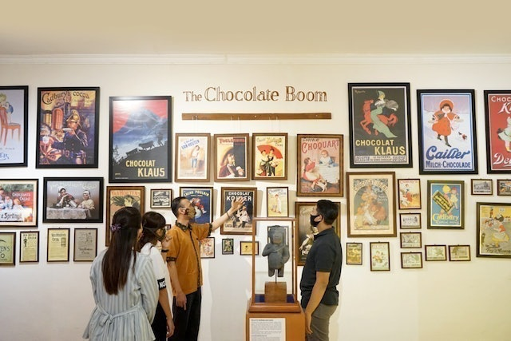
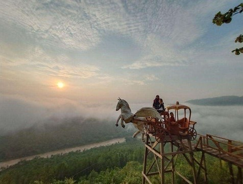
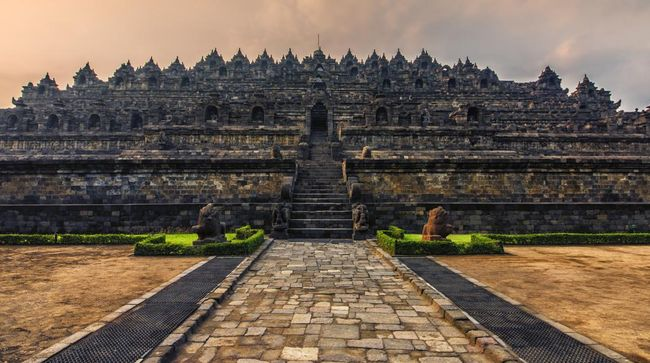
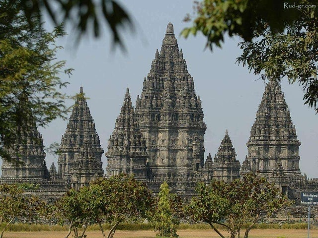
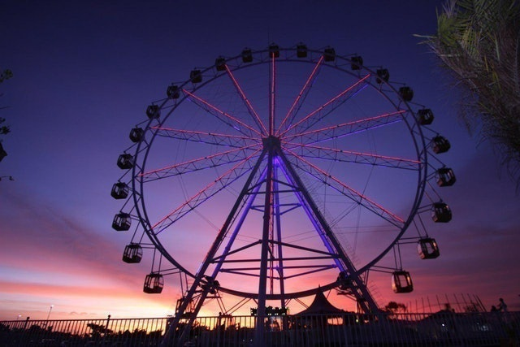
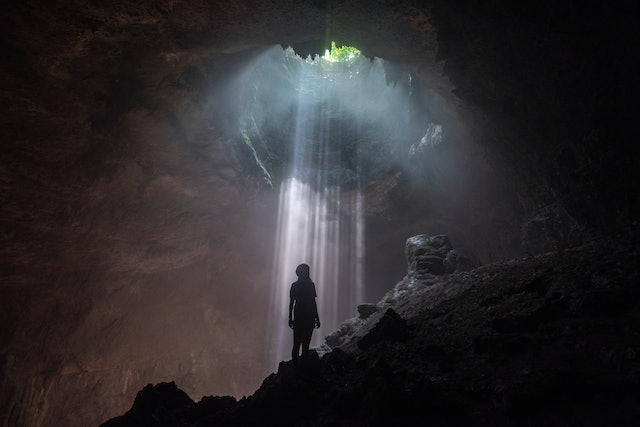

Joko Pinurbo menyatakan dalam penggalan puisinya bahwa "Jogja terbuat dari rindu, pulang, dan angkringan". Karena dengan ragam pesonanya, Jogja menjadi daerah istimewa yang mampu membuat Anda rindu untuk datang lagi dan lagi. Tidak hanya budaya yang menjadi daya tarik Jogja, tetapi juga bentang alam dan kulinernya. Karena itu, wajar jika Jogja selalu dipadati wisatawan, terutama saat musim liburan. Jogja adalah destinasi favorit banyak wisatawan. Kota gudeg ini kaya akan budaya, sejarah, dan alamnya yang memesona. Setiap tahun, selalu ada tempat wisata baru dan hits di Jogja. Meski banyak tempat-tempat baru, destinasi bersejarah di Jogja tetap merupakan tempat yang wajib dikunjungi juga.
Dari Tugu Jogja yang ikonis, Anda bisa berjalan kaki ke Malioboro sambil menikmati suasana. Saat berwisata belanja di Malioboro, jangan lupa cicipi kuliner di sekitar Pasar Beringharjo. Dari makanan ringan hingga nasi gudeg, soto, dan pecel, semua ada! Kawasan Malioboro juga sudah ditata sedemikian rupa sehingga lebih rapi, indah, dan Instagrammable!. Jika Anda menyukai wisata alam, sisi selatan Jogja memiliki ratusan pantai yang bisa Anda kunjungi. Deretan pantai ini membentang dari Kulon Progo, Bantul, hingga Gunung Kidul. Beberapa pantai yang populer di antaranya Pantai Timang, Indrayanti, dan Parangtritis. Pantai-pantai tersebut bisa dijangkau baik dengan motor maupun mobil.
Banyaknya tempat wisata di Jogja membuat Anda harus cermat memilih destinasi agar liburan makin berkesan. Misalnya, Anda perlu mempertimbangkan soal jarak dan waktu saat berlibur ke Jogja. Lebih lengkapnya, Berikut ini merupakan tips memilih tempat wisata di Jogja yang dapat disimak:
Dari wisata alam, budaya, sejarah, belanja, hingga kuliner bisa Anda temukan di Jogja. Karena itu, pilih tempat wisata tujuan Anda berdasarkan jenisnya. Bagi Anda yang menyukai wisata alam di Jogja, beragam pilihan bisa Anda masukkan ke dalam bucketlist Anda. Tidak hanya gunung dan pantai, Jogja juga memiliki gua, hutan, dan sungai sebagai destinasi wisata. Jika Anda menyukai wisata sejarah dan budaya, Jogja adalah yang destinasi yang tepat! Anda bisa menyusuri jejak sejarah Mataram Islam dari Kota Gede sebagai ibu kota pertama hingga Kraton Jogja. Jika Anda berlibur bersama anak-anak, taman bermain merupakan pilihan tepat. Jogja memiliki sejumlah destinasi wisata berupa taman bermain dan belajar. Ajak juga anak-anak Anda untuk bermain dan belajar di Sindu Kusuma Edupark. Ada berbagai wahana yang tersebar di kawasan seluas tujuh hektare, di antaranya bianglala, lampion, serta bioskop 4 dimensi.
Pusat wisata belanja malioboro juga menjadi salah satu destinasi wajib jika Anda berkunjung ke Jogja. Nikmati suasana Jogja dengan berjalan kaki di Malioboro sambil berbelanja. Batik, kaus, dan aneka suvenir dijual dengan harga terjangkau. Anda bisa membelinya untuk diri sendiri atau sebagai oleh-oleh untuk keluarga.Setelah puas berbelanja, nikmati aneka sajian kuliner khas Jogja. Selain gudeg, Anda juga bisa menyantap oseng mercon, sate klathak, atau kopi joss. Anda dapat mengeksplorasi kekayaan kuliner Jogja setiap kali berwisata ke sana.
Untuk memilih tempat wisata di Jogja, Anda juga perlu mempertimbangkan waktu liburan dan jarak antartempat wisata. Jika Anda hanya memiliki waktu pada akhir pekan, prioritaskan tempat wisata yang benar-benar ingin dikunjungi. Diskusikan hal ini dengan teman atau keluarga yang akan pergi bersama Anda. Susun dan sepakati itinerary agar liburan Anda lebih menyenangkan.
Untuk menghemat waktu, pertimbangkan juga jarak antartempat wisata yang akan Anda kunjungi. Dalam sehari, pilih tempat wisata yang berdekatan atau searah, misalnya, setelah dari Gua Jomblang, lanjut ke Pantai Timang. Pilihan ini bisa diambil karena kedua destinasi tersebut berlokasi di Gunung Kidul. Dalam perjalanan pulang, Anda bisa mampir ke Bukit Bintang untuk menikmati jagung bakar.
Paket wisata atau tur bisa menjadi pilihan untuk Anda yang ingin praktis. Satu paket tur umumnya menyediakan kunjungan ke beberapa destinasi yang searah. Transportasi juga disediakan oleh penyedia jasa. Dengan demikian, Anda tidak perlu repot-repot memikirkan transportasi. Kelebihan lainnya, guide profesional sudah sepaket dengan tur tersebut. Beberapa paket tur juga menyediakan jasa foto.
Bagi Anda pencinta solo traveling, menggunakan paket tur juga lebih memudahkan Anda. Anda bisa memilih motorcycle tour untuk keliling kota. Pertimbangkan juga untuk memilih paket tur dengan sistem open-trip (non-private tour). Selain lebih hemat, Anda juga bisa mengenal orang-orang baru selama traveling.
Pandemi COVID-19 membuat pemerintah menerapkan kebijakan baru yang berkaitan dengan perjalanan dan wisata. Karena itu, Anda perlu mencari tahu syarat dan ketentuan di tempat wisata yang akan Anda kunjungi. Mencari informasi tempat wisata terbaru di Jogja saja tidak cukup. Pastikan Anda juga mengetahui tempat wisata di Jogja yang sudah dibuka. Kapasitas dan jam buka tempat wisata juga perlu Anda cari tahu. Untuk informasi lengkap mengenai wisata Jogja, Anda bisa mengunduh aplikasi Visiting Jogja atau kunjungi visitingjogja.com. Aplikasi dan website tersebut dikelola oleh Dinas Pariwisata Daerah Istimewa Yogyakarta.
Berikut ini adalah 7 rekomendasi tempat wisata terbaik yang ada di jogja:
| NO | Nama Tempat Wisata | Gambar | Cek Harga | Keterangan |
|---|---|---|---|---|
| 1 | Chocolate Monggo Museum |  | klik disini | Intip pembuatan cokelat langsung dari pabriknya! |
| 2 | Jogja 1 Hari |  | klik disini | Mengunjungi lima destinasi hits dan populer di jogja dalam sehari |
| 3 | Lava Tour Merapi | klik disini | Bertualang sambil menyaksikan keindahan Gunung Merapi | |
| 4 | Candi Borobudur |  | klik disini | Candi atau kuil Buddha terbesar di dunia, sekaligus salah satu monumen Buddha terbesar di dunia |
| 5 | Candi Prambanan |  | klik disini | Candi dengan jejak sejarah abad ke-9 yang tetap berdiri megah |
| 6 | Sindu Kusuma Edupark |  | klik disini | Bermain dan belajar lewat beragam wahana yang asyik dan seru |
| 7 | Caving Goa Jomblang |  | klik disini | Temukan pemandangan bak cahaya surga di dalam Gua Jomblang |
Nama : Azzirah Syaharani
NIM : 11210251000043
Kelas : 5A
Mata Kuliah : Pengembangan Web
Dosen Pengampu : Muhammad Azwar, S.Pd., M.Hum